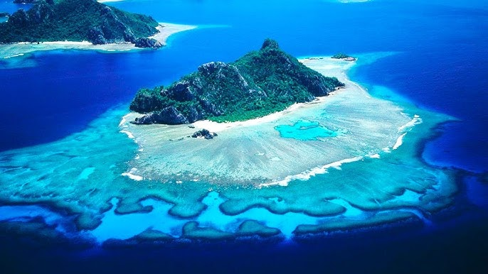

EINSTEIN ISLANDS
Benvingut a les Einstein Islands. Només els més intel·ligents aconseguiran descobrir la clau secreta.

Què heu de fer?
Benvinguts a les Einstein Islands, un lloc ple de misteris i desafiaments que només els més intel·ligents podran superar. La vostra missió comença amb la recerca de la clau secreta que us permetrà accedir a un servidor especial de Minecraft, però no serà fàcil: haureu de completar dos reptes en ordre. Primer, dirigiu-vos a la Illa 1 i jugueu al Snake; aquí haureu d’aconseguir la primera pista amagada dins del joc, demostrant agilitat i estratègia. Un cop superat aquest repte, continueu cap a la Illa 2 per enfrontar-vos al Tetris, on haureu de completar les línies necessàries per obtenir la segona part de la informació. Només combinant correctament les pistes obtingudes a ambdues illes podreu reconstruir la clau secreta, que és en realitat una IP per accedir a un servidor de Minecraft especial. Després d’entrar-hi, començaran les veritables proves de les Einstein Islands, on només els més atents i creatius podran avançar i descobrir tots els secrets que amaga aquest lloc. Esteu preparats per afrontar el repte i demostrar la vostra intel·ligència?
Les Illes
Einstein 1st Island
Einstein 2nd Island